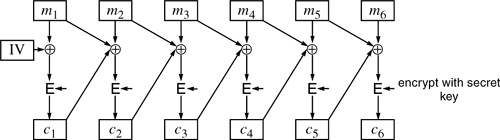

Networking Security Networking Security Networking Security Security Networking Security Networking Security Networking Charlie Kaufman Radia Perlman Mike Speciner Prentice Hall Network Security: Private Communication in a Public World, Second Edition
13.9. Encryption for Privacy and Integrity
Many of the data structures that Kerberos encrypts need to be protected from both disclosure and modification. In a ticket, for example, the KEY field needs to be protected from both disclosure and modification, and the NAME and EXPIRATION fields need to be protected from modification.
Unfortunately, there is no standard mechanism for protecting both the confidentiality and integrity of a message with a single cryptographic pass. Generally the most useful way to protect the confidentiality of a message is to encrypt it in CBC mode (see §4.2.2 Cipher Block Chaining (CBC)). The most standard way to protect its integrity is with a CBC residue. But securely applying both of these techniques would require double the encryption effort and two separate keys (see §4.3.1 Ensuring Privacy and Integrity Together).
Intuitively, it seems like it should be possible to make do with a single cryptographic pass by including some redundant information in the message to be encrypted and then to have the integrity of the message protected by having the recipient check that the redundancy is correctly done. A number of schemes have been proposed for doing this. Many have been found to have cryptographic weaknesses. None has gained general acceptance. The designers of Kerberos came up with their own variation on this theme, and subsequently cryptographic flaws were found with it. The flaws were not so egregious as to justify recalling Kerberos V4; however, a different approach is followed in Kerberos V5.
One method for using DES on a long message is CBC. CBC does a good job on privacy. An intruder will not gain any information from analysis of the encrypted blocks. However, there is no integrity check that Kerberos can do to assure an application that the data was not tampered with. If an intruder were to modify block cn, then mn would be garbage, as would mn+1, but starting from mn+2 everything would decrypt properly. Kerberos would not be able to detect that mn and mn+1 had been garbled. Some applications might be able to tell, but Kerberos would like to provide the integrity assurance without depending on the application.
Therefore, Kerberos did a modified version of CBC which they called Plaintext Cipher Block Chaining (PCBC). It is similar to CBC except that in addition to  ing cn with mn+1, mn is also 'd. In other words, in CBC, mn+1 cn is encrypted to yield cn+1. In PCBC, mn+1 cn mn is encrypted to yield cn+1. ing cn with mn+1, mn is also 'd. In other words, in CBC, mn+1 cn is encrypted to yield cn+1. In PCBC, mn+1 cn mn is encrypted to yield cn+1.

PCBC has the property that modifying any ci will result in garbling of all decrypted plaintext blocks starting with mi all the way to the end. Kerberos puts some recognizable data at the end of a message that it will encrypt so that it can recognize whether the final block decrypts properly. It makes the assumption that if the final block decrypts properly, then the data has not been tampered with between the time it was transmitted by the source and received by the destination.
However, using PCBC and checking the contents of the final decrypted block does not guarantee that Kerberos will be able to detect message corruption. For instance, if an intruder were to swap two adjacent blocks, PCBC will "get back in sync" after those two blocks, and the final block will decrypt properly (see Homework Problem 5).
|